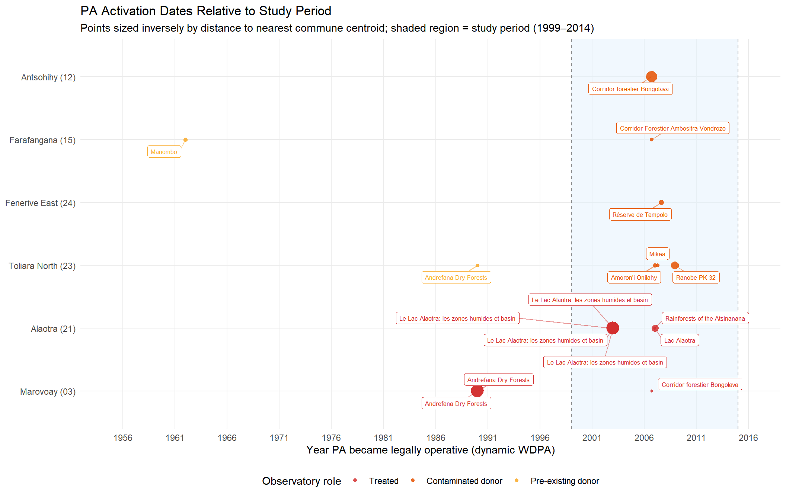
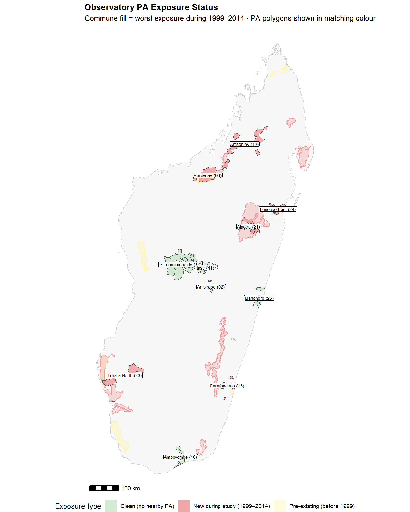
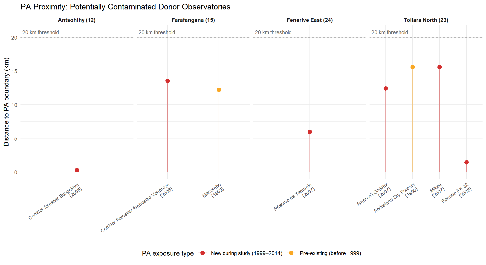
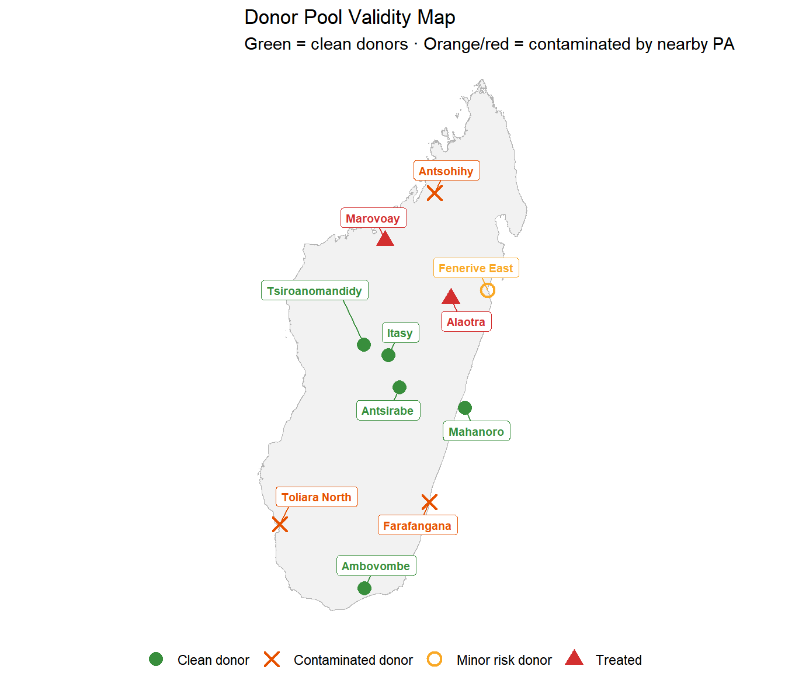
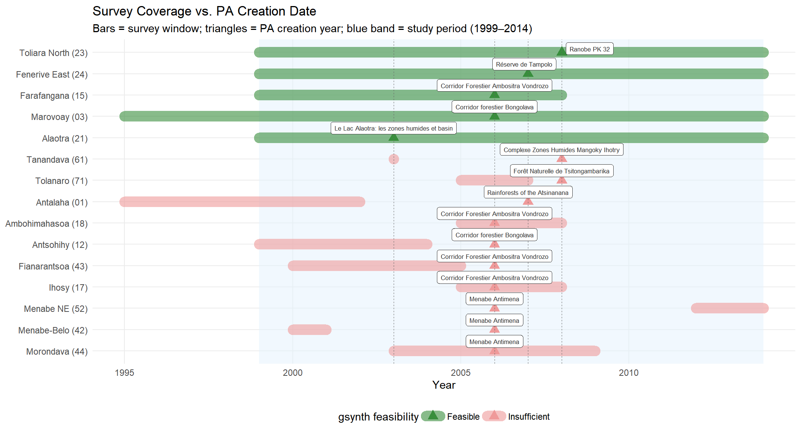
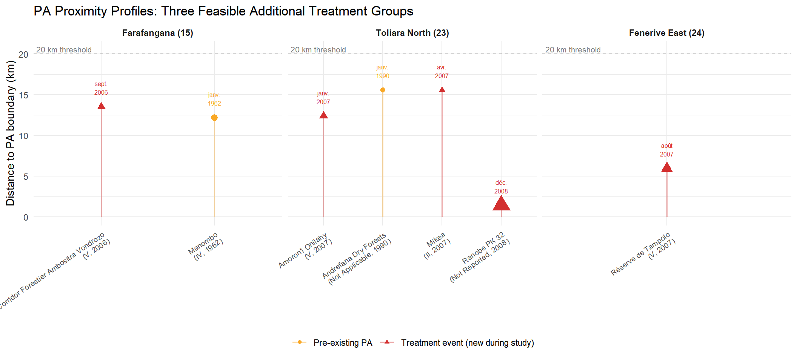

| Observatory–PA Proximity | ||||||||
| All pairs within 20 km · Dynamic WDPA (1999–2014 study window)1 | ||||||||
| Observatory | Role | Closest commune | Dist. (km) | PA name | Designation | IUCN | Active from | Exposure type |
|---|---|---|---|---|---|---|---|---|
| Marovoay (03) | Treated | Marovoay | 0.0 | Ankarafantsika | Strict Nature Reserve / National Park | Ia / II | 12/31/1927 | Pre-existing (before 1999) |
| Marovoay (03) | Treated | Tsararano | 0.0 | Ankarafantsika | Strict Nature Reserve / National Park | Ia / II | 12/31/1927 | Pre-existing (before 1999) |
| Marovoay (03) | Treated | Marovoay | 0.0 | Andrefana Dry Forests | World Heritage Site (natural or mixed) | Not Applicable | 1/1/1990 | Pre-existing (before 1999) |
| Marovoay (03) | Treated | Tsararano | 0.0 | Andrefana Dry Forests | World Heritage Site (natural or mixed) | Not Applicable | 1/1/1990 | Pre-existing (before 1999) |
| Marovoay (03) | Treated | Ankazomborona | 18.3 | Corridor forestier Bongolava | Temporary Protection | V | 9/15/2006 | New during study (1999–2014) |
| Antsohihy (12) | Donor pool | Tsarahasina | 0.3 | Corridor forestier Bongolava | Temporary Protection | V | 9/15/2006 | New during study (1999–2014) |
| Farafangana (15) | Donor pool | Vohitromby | 12.2 | Manombo | Special Reserve | IV | 1/1/1962 | Pre-existing (before 1999) |
| Farafangana (15) | Donor pool | Mahatsinjo | 13.5 | Corridor Forestier Ambositra Vondrozo | Temporary Protection | V | 9/15/2006 | New during study (1999–2014) |
| Alaotra (21) | Treated | Amparafaravola | 0.0 | Le Lac Alaotra: les zones humides et basin | Ramsar Site, Wetland of International Importance | V | 1/1/2003 | New during study (1999–2014) |
| Alaotra (21) | Treated | Morarano Chrome | 0.0 | Le Lac Alaotra: les zones humides et basin | Ramsar Site, Wetland of International Importance | V | 1/1/2003 | New during study (1999–2014) |
| Alaotra (21) | Treated | Ambatondrazaka Suburbaine | 0.0 | Le Lac Alaotra: les zones humides et basin | Ramsar Site, Wetland of International Importance | V | 1/1/2003 | New during study (1999–2014) |
| Alaotra (21) | Treated | Ilafy | 0.0 | Le Lac Alaotra: les zones humides et basin | Ramsar Site, Wetland of International Importance | V | 1/1/2003 | New during study (1999–2014) |
| Alaotra (21) | Treated | Amparafaravola | 2.4 | Lac Alaotra | Temporary Protection | V | 1/8/2007 | New during study (1999–2014) |
| Alaotra (21) | Treated | Feramanga Nord | 17.8 | Rainforests of the Atsinanana | World Heritage Site (natural or mixed) | Not Applicable | 1/1/2007 | New during study (1999–2014) |
| Toliara North (23) | Donor pool | Miary Ambohibola | 1.4 | Ranobe PK 32 | Temporary Protection | Not Reported | 12/2/2008 | New during study (1999–2014) |
| Toliara North (23) | Donor pool | Miary Ambohibola | 12.4 | Amoron'i Onilahy | Temporary Protection | V | 1/17/2007 | New during study (1999–2014) |
| Toliara North (23) | Donor pool | Ankililoaka | 15.6 | Mikea | Temporary Protection / National Park | II | 4/13/2007 | New during study (1999–2014) |
| Toliara North (23) | Donor pool | Ankililoaka | 15.6 | Andrefana Dry Forests | World Heritage Site (natural or mixed) | Not Applicable | 1/1/1990 | Pre-existing (before 1999) |
| Fenerive East (24) | Donor pool | Ampasina Maningory | 6.0 | Réserve de Tampolo | Temporary Protection | V | 8/20/2007 | New during study (1999–2014) |
| 1 Red: new PA during study period (potential contamination). Yellow: pre-existing PA (constant background). Grey: PA created after 2014 (no exposure during study). | ||||||||
Donor Pool Validity: PA Exposure Assessment
Are donor observatories truly unexposed to conservation interventions?
1 Motivation
The generalized synthetic control estimator (Xu 2017) used in Chapter 12 to evaluate income effects around Ankarafantsika National Park and Lac Alaotra requires that donor pool units are never exposed to the treatment of interest. In this context, that means the nine donor observatories (Antsirabe, Antsohihy, Tsiroanomandidy, Farafangana, Ambovombe, Toliara North, Fénérive East, Mahanoro, Itasy) should not themselves be adjacent to protected areas that were actively enforced during the 1999–2014 study period.
This assumption is plausible by design — ROR observatories were selected for agricultural and socio-economic monitoring, not for proximity to PAs — but it has never been systematically verified. The analysis in Chapter 2 identified several observatory–PA pairs based on visual inspection and a curated list. That inventory was informative but incomplete, and it relied on a static boundary layer (Vahatra 2017) that does not capture when each PA became legally operative.
This chapter provides a systematic spatial audit using the dynamic WDPA for Madagascar (data/dynamic_wdpa.rds), a temporally explicit database developed by Bédécarrats, Ramanantsoa, and Andrianambinina (2026) that corrects and extends the standard WDPA with historical states derived from legal texts, multiple institutional datasets, and spatially referenced decree dates. Unlike the static Vahatra or current WDPA snapshots, the dynamic WDPA assigns each PA state a precise valid_from / valid_to interval, enabling assessment of whether any observatory was adjacent to an active PA at any point during the study period.
2 Why Static PA Boundaries Are Insufficient
Standard PA databases — including the current WDPA and the widely used Vahatra dataset — record the current (or most recent) boundary and designation of each protected area. They do not convey:
Boundary changes: Many Malagasy PAs were significantly extended or reorganised between 1999 and 2015. Ankarafantsika’s 2002 reclassification merged the original 1927 RNI with an adjacent forest reserve, approximately doubling the effectively protected area. Distances computed to the 2015 boundary therefore overstate proximity for communities that bordered only the pre-2002 reserve.
Temporary protection decrees: Madagascar’s legal framework for the post-2003 PA expansion (under SAPM) created hundreds of PAs first via temporary decrees (décrets provisoires, typically 3–5 years) before formal designation. These temporary decrees already imposed de facto conservation restrictions but are absent from WDPA snapshots that record only the final designation year.
Date accuracy: Numerous PAs in the static WDPA carry incorrect or missing
STATUS_YRvalues. The dynamic WDPA cross-references entries against the CNLEGIS legal database and corrects these systematically.
The dynamic_wdpa.rds addresses all three issues: it represents each PA as a sequence of temporally indexed states, with geometry and attributes that reflect the legally operative situation at each point in time.
3 Data and Methods
3.1 Observatory Communes
Observatory locations are represented by the commune-level polygons from data/Observatoires_ROS_communes_COD_v4.gpkg, as georeferenced in Chapter 1. For each of the 11 observatories in the study (2 treated + 9 donor pool), we use the centroid of each commune polygon as the observatory representation. This is conservative: distances measured from centroids will in some cases understate proximity relative to boundary-to-boundary distances.
3.2 Dynamic WDPA
The dynamic WDPA contains 216 temporal states covering 159 distinct WDPA IDs. Each state has a valid_from date (the date the legal instrument creating or modifying that state entered into force) and an optional valid_to date (when the state was superseded). States with valid_to = NA are currently active.
We retain only external boundary states (zone_type == "external_boundary") that were active at any point during the study window (1999–2014):
This yields 78 PAs with at least one legally operative state during 1999–2014.
3.3 Proximity Computation
We identify 32 observatory commune–PA pairs within 20 km, of which 14 involve donor pool observatories.
4 Results
4.1 Overview of Nearby PAs by Observatory
Table 1 summarises all observatory–PA pairs within 20 km, with the earliest exposure date from the dynamic WDPA.
4.2 Exposure Classification of Donor Observatories
| Donor Pool: PA Exposure Status | |||||
| Based on 20 km proximity threshold and dynamic WDPA temporal states | |||||
| Observatory | PA exposure status | # PAs within 20 km | Closest PA (km) | Nearest PA | PA active from |
|---|---|---|---|---|---|
| Antsirabe (02) | Clean | 0 | NA | — | NA |
| Tsiroanomandidy (13) | Clean | 0 | NA | — | NA |
| Ambovombe (16) | Clean | 0 | NA | — | NA |
| Mahanoro (25) | Clean | 0 | NA | — | NA |
| Itasy (41) | Clean | 0 | NA | — | NA |
| Antsohihy (12) | Potentially contaminated | 1 | 0.3 | Corridor forestier Bongolava | 9/15/2006 |
| Farafangana (15) | Potentially contaminated | 2 | 12.2 | Manombo | 1/1/1962 |
| Toliara North (23) | Potentially contaminated | 4 | 1.4 | Ranobe PK 32 | 12/2/2008 |
| Fenerive East (24) | Potentially contaminated | 1 | 6.0 | Réserve de Tampolo | 8/20/2007 |
The classification yields three groups:
Clean (green): Antsirabe, Tsiroanomandidy, Ambovombe, Mahanoro, Itasy — no PA within 20 km during the study period. Ambovombe has nearby PAs (Sud-Ouest Ifotaky, Ria Androy) that only became operative in 2015, after the study period closes.
Pre-existing exposure (yellow): Farafangana — near Manombo Special Reserve (IV, 1962), which predates the study period and maintained unchanged boundaries throughout. Exposure is constant, so there is no within-period treatment variation that would bias synthetic control weights. However, Farafangana is also within 14 km of the Corridor Forestier Ambositra-Vondrozo (temporary decree, September 2006), placing it also in the contaminated category.
Potentially contaminated (red): four observatories where a new PA became active during the study window:
- Antsohihy (12) — within 0.3 km of the Corridor forestier Bongolava (temporary protection decree, 15 September 2006);
- Farafangana (15) — also within 14 km of the Corridor Forestier Ambositra-Vondrozo (temp decree, 15 September 2006), in addition to the pre-existing Manombo SR;
- Toliara North (23) — within 1.4 km of Ranobe PK 32 (temp decree, 2 December 2008), 12 km of Amoron’i Onilahy (temp decree January 2007), 16 km of Mikea (temp decree April 2007);
- Fénérive East (24) — within 6 km of Réserve de Tampolo (temp decree August 2007, confirmed 2006 in WDPA).
4.3 Timeline of PA Activation Relative to Study Period

4.4 Spatial Map of Exposures

4.5 Detailed Exposure Profiles for Contaminated Donors

5 Observatory-by-Observatory Assessment
5.1 Antsohihy (12) — Corridor forestier Bongolava
The commune of Tsarahasina (Antsohihy observatory) borders the Corridor forestier Bongolava directly (centroid distance ~0.3 km). A second commune, Marovantaza, lies ~9.6 km away. The Corridor was created by temporary protection decree on 15 September 2006 (WDPA ID 352244, IUCN V), overlapping with 8 post-2006 survey years (2006–2014). The dynamic WDPA records this as a single state: valid_from = 2006-09-15, valid_to = NA (no superseding decree, the “temporary” protection has remained in force). There is no record of this PA in the WDPA before 2006.
Implication: Tsarahasina households may have experienced conservation-related income effects from 2006 onward. If the Corridor enforced resource restrictions, gsynth factor loadings estimated from Antsohihy pre-2006 observations would extrapolate to a post-2006 world in which Antsohihy was effectively treated.
5.2 Farafangana (15) — Manombo + Corridor Ambositra-Vondrozo
Farafangana faces a dual exposure:
Manombo Special Reserve (IV, 1962): The communes of Vohitromby (~12 km) and Vohimasy (~20 km) have been near this reserve for the entire study period and long before. Manombo’s designation and boundaries have not changed, so this constitutes constant background exposure — problematic for impact evaluation relative to a pristine control, but not a source of within-period bias for the synthetic control method which absorbs unit fixed effects.
Corridor Forestier Ambositra-Vondrozo (V, temp decree 15 September 2006, WDPA ID 555697881): The commune of Mahatsinjo lies ~14 km from this corridor, which was gazetted contemporaneously with the Bongolava corridor. This introduces a mid-period treatment event similar to Antsohihy.
5.3 Toliara North (23) — Ranobe PK 32, Amoron’i Onilahy, Mikea
Toliara North’s commune of Miary Ambohibola is within 1.4 km of Ranobe PK 32 (temp decree 2 December 2008, WDPA 555549460), a large terrestrial PA covering 1,685 km². Ankililoaka (the second commune) is 12.5 km away. Two additional PAs became active earlier:
- Amoron’i Onilahy (V, temp decree 17 January 2007): 12.4 km from Miary Ambohibola.
- Mikea National Park (II, temp decree 13 April 2007, gazetted 2011): 15.6 km from Ankililoaka.
The Andrefana Dry Forests World Heritage Site (1990) is also within 16 km of Ankililoaka but predates the study period.
Implication: Toliara North experienced a cascade of conservation interventions starting in January 2007, substantially constraining land use in areas adjacent to the observatory. With the nearest commune < 1.5 km from Ranobe PK 32, this is among the most problematic cases for donor pool validity.
5.4 Fénérive East (24) — Réserve de Tampolo
The commune of Ampasina Maningory is 5.9 km from the Réserve de Tampolo boundary (WDPA 354011, V). The dynamic WDPA records a single state from 20 August 2007; the WDPA STATUS_YR gives 2006. Three additional Fénérive East communes lie within 13–18 km. The Réserve de Tampolo is a small reserve (~7.3 km²) focused on littoral forest conservation; its enforcement intensity is likely lower than the terrestrial corridors, but a formal protection decree was in place from 2006/2007 onward.
6 Implications for Synthetic Control Estimates
| Donor Pool Contamination Risk | |||||
| Summary and recommended treatment for robustness checks | |||||
| Observatory | Code | Exposure status | PA(s) | Active from | Recommended action |
|---|---|---|---|---|---|
| Antsirabe | 02 | Clean | None | — | Keep in donor pool |
| Antsohihy | 12 | Contaminated | Corridor Bongolava | Sep 2006 | Exclude or flag; sensitivity analysis |
| Tsiroanomandidy | 13 | Clean | None | — | Keep in donor pool |
| Farafangana | 15 | Pre-existing + contaminated | Manombo (1962) + Corridor A-V (2006) | Sep 2006 | Exclude; dual exposure |
| Ambovombe | 16 | Clean (post-study PAs) | Ria Androy, Sud-Ouest Ifotaky (2015) | — | Keep in donor pool |
| Toliara North | 23 | Contaminated | Amoron'i Onilahy, Mikea, Ranobe PK 32 | Jan 2007 | Exclude; strongest contamination |
| Fénérive East | 24 | Contaminated | Réserve de Tampolo | Aug 2007 | Flag; small reserve, minor risk |
| Mahanoro | 25 | Clean | None | — | Keep in donor pool |
| Itasy | 41 | Clean | None | — | Keep in donor pool |
The main results in Chapter 12 use the full donor pool. The following sensitivity analysis should be considered:
Restricted donor pool (remove Antsohihy, Farafangana, Toliara North; optionally Fénérive East): Re-run gsynth for both Marovoay and Alaotra with only the four clean donors (Antsirabe, Tsiroanomandidy, Mahanoro, Itasy) plus Ambovombe. This yields a smaller but purer control group. With fewer donor sites, the factor loadings will be estimated with less precision, but contamination bias is eliminated.
Partial restriction (remove only Toliara North and Antsohihy): These two exhibit the most severe and earliest contamination. Farafangana retains a pre-existing, constant-treatment component (Manombo) that absorbs into the unit fixed effect; its contamination from Corridor Ambositra-Vondrozo begins only in late 2006, affecting 8 post-treatment years for Marovoay and 6–8 for Alaotra.
Event-study window robustness: For the Marovoay model, the treatment onset (2003) predates all contamination events (earliest 2006). Pre-treatment balance tests (placebo ATTs before 2003) are unaffected by post-2006 contamination. For Alaotra (treatment 2008), the Toliara North contamination in particular (Jan 2007) means this observatory’s post-2007 outcomes may already reflect conservation effects when used as a donor.

7 Expanding the Treated Sample: Additional Exposed Observatories
The analysis above was framed around the nine donor pool observatories of Chapter 12. But the full ROS network covers 28 observatories, many of which were not included in the Chapter 12 panel because they lacked the long balanced panel needed for synthetic control estimation. Now that we have established a systematic framework for identifying PA exposure across all observatories, a natural extension is to ask: are there other ROS observatories — outside the current Chapter 12 sample — that were treated by a new PA during the study period and have sufficient survey coverage to be analysed as additional treated units?
This section maps the complete set of exposed observatories across the ROS network, assesses the feasibility of including each as an additional treatment group, and identifies which ones offer the most analytic value for extending the scope of the Chapter 12 analysis.
7.1 PA Exposure Across the Entire ROS Network
Table 4 lists all ROS observatories with at least one new PA within 20 km during the study period, alongside their survey coverage and feasibility for inclusion as additional treated units.
| PA Exposure Across the Full ROS Network | |||||||||
| Observatories within 20 km of a new PA (1999–2014) · gsynth feasibility requires ≥4 pre + ≥3 post survey years | |||||||||
| Observatory | Role | Nearest new PA | PA year | Dist. (km) | Survey start | Survey end | Pre-PA yrs | Post-PA yrs | Feasibility |
|---|---|---|---|---|---|---|---|---|---|
| Antalaha (01) | Other ROS | Rainforests of the Atsinanana | 2007 | 7.0 | 1995 | 2002 | 12 | 0 | ✗ Insufficient |
| Marovoay (03) | Treated (ch. 12) | Corridor forestier Bongolava | 2006 | 18.3 | 1995 | 2014 | 11 | 9 | ✓ Feasible |
| Antsohihy (12) | Donor pool (ch. 12) | Corridor forestier Bongolava | 2006 | 0.3 | 1999 | 2004 | 7 | 0 | ✗ Insufficient |
| Farafangana (15) | Donor pool (ch. 12) | Corridor Forestier Ambositra Vondrozo | 2006 | 13.5 | 1999 | 2008 | 7 | 3 | ✓ Feasible |
| Ihosy (17) | Other ROS | Corridor Forestier Ambositra Vondrozo | 2006 | 3.8 | 2005 | 2008 | 1 | 3 | ✗ Insufficient |
| Ambohimahasoa (18) | Other ROS | Corridor Forestier Ambositra Vondrozo | 2006 | 2.2 | 2005 | 2008 | 1 | 3 | ✗ Insufficient |
| Alaotra (21) | Treated (ch. 12) | Le Lac Alaotra: les zones humides et basin | 2003 | 0.0 | 1999 | 2014 | 4 | 12 | ✓ Feasible |
| Toliara North (23) | Donor pool (ch. 12) | Ranobe PK 32 | 2008 | 1.4 | 1999 | 2014 | 9 | 7 | ✓ Feasible |
| Fenerive East (24) | Donor pool (ch. 12) | Réserve de Tampolo | 2007 | 6.0 | 1999 | 2014 | 8 | 8 | ✓ Feasible |
| Menabe-Belo (42) | Other ROS | Menabe Antimena | 2006 | 0.0 | 2000 | 2001 | 6 | 0 | ✗ Insufficient |
| Fianarantsoa (43) | Other ROS | Corridor Forestier Ambositra Vondrozo | 2006 | 0.5 | 2000 | 2005 | 6 | 0 | ✗ Insufficient |
| Morondava (44) | Other ROS | Menabe Antimena | 2006 | 8.5 | 2003 | 2009 | 3 | 4 | ✗ Insufficient |
| Menabe NE (52) | Other ROS | Menabe Antimena | 2006 | 11.9 | 2012 | 2015 | 0 | 9 | ✗ Insufficient |
| Tanandava (61) | Other ROS | Complexe Zones Humides Mangoky Ihotry | 2008 | 2.2 | 2003 | 2003 | 5 | 0 | ✗ Insufficient |
| Tolanaro (71) | Other ROS | Forêt Naturelle de Tsitongambarika | 2008 | 1.4 | 2005 | 2007 | 3 | 0 | ✗ Insufficient |
7.2 Feasibility Assessment
The cross-reference reveals a stark trade-off between PA coverage and survey design. The ROS was not designed to monitor conservation impacts, so most observatories with nearby PAs have insufficient panel depth for synthetic control analysis. The key constraint is pre-treatment observations: gsynth needs enough pre-period years to learn unit-specific factor loadings.

The feasibility assessment identifies 5 observatories meeting the ≥4 pre-treatment / ≥3 post-treatment threshold (highlighted green in Table 4 and Figure 5):
| Feasible Additional Treatment Groups | ||||||||
| Observatories that could be analysed as separate treated units in an extended gsynth | ||||||||
| Observatory | Nearest new PA | PA year | Dist. (km) | Survey start | Survey end | Pre-PA yrs | Post-PA yrs | All new PAs |
|---|---|---|---|---|---|---|---|---|
| Marovoay (03) | Corridor forestier Bongolava | 2006 | 18.3 | 1995 | 2014 | 11 | 9 | Corridor forestier Bongolava (sept. 2006) |
| Farafangana (15) | Corridor Forestier Ambositra Vondrozo | 2006 | 13.5 | 1999 | 2008 | 7 | 3 | Corridor Forestier Ambositra Vondrozo (sept. 2006) |
| Alaotra (21) | Le Lac Alaotra: les zones humides et basin | 2003 | 0.0 | 1999 | 2014 | 4 | 12 | Le Lac Alaotra: les zones humides et basin (janv. 2003); Le Lac Alaotra: les zones humides et basin (janv. 2003); Le Lac Alaotra: les zones humides et basin (janv. 2003); Le Lac Alaotra: les zones humides et basin (janv. 2003); Lac Alaotra (janv. 2007); Rainforests of the Atsinanana (janv. 2007) |
| Toliara North (23) | Ranobe PK 32 | 2008 | 1.4 | 1999 | 2014 | 9 | 7 | Ranobe PK 32 (déc. 2008); Amoron'i Onilahy (janv. 2007); Mikea (avr. 2007) |
| Fenerive East (24) | Réserve de Tampolo | 2007 | 6.0 | 1999 | 2014 | 8 | 8 | Réserve de Tampolo (août 2007) |
7.3 Conceptual Design for Extended Analysis
Each feasible observatory represents a separate, independently treated unit: the PA(s) near that observatory differ in type (corridor, national park, wetland complex), governance model, and intensity of implementation. Unlike Marovoay and Alaotra, which are the primary research sites with additional 2025 resurvey validation, these additional treated observatories lack:
- Detailed documentation of enforcement onset (only the legal decree date is known);
- Information on which specific fokontany are inside vs. outside the PA buffer;
- Behavioural survey data confirming actual household-PA interaction.
Their inclusion in an extended analysis should therefore be treated as exploratory, with the primary aim of testing whether the pattern observed at Marovoay (strict NP → income decline) and Alaotra (multipurpose CBNRM → no effect) generalises to other PA types and geographic contexts.
Proposed modelling approach: Run gsynth separately for each feasible observatory, treating it as a standalone treated unit against the full clean donor pool (Antsirabe 02, Tsiroanomandidy 13, Ambovombe 16, Mahanoro 25, Itasy 41). This avoids staggered-adoption complications while allowing observatory-specific ATT estimates. The PA type (strict/multipurpose) is then used as a cross-cutting moderator — extending the strict vs. multipurpose comparison from two cases to a broader sample.
Key differences vs. Chapter 12:
| Feature | Chapter 12 | Extended analysis |
|---|---|---|
| Treated units | 2 observatories (Maro, Ala) | 2 + k additional |
| Treatment validation | 2025 resurvey | Legal decree date only |
| PA type assignment | Documented (NP vs. CBNRM) | Inferred from IUCN category |
| Donor pool | 9 sites | 5 clean sites |
| Outcome | Log income pc (OECD) | Same |
| Estimation | gsynth (r=0–2) | gsynth (r=0–2) per observatory |
This design is implemented and discussed in a forthcoming extension chapter.
7.4 Observatory Profiles: The Three Feasible Additional Treatment Groups
All three feasible additional treated observatories are drawn from the contaminated donor pool: their nearness to a new PA was a liability in Section 4 but is precisely the feature that qualifies them as treatment units here. This section provides individual profiles covering treatment event, PA character, survey window, and implications for the strict vs. multipurpose comparison.
| Three Additional Treatment Groups | ||||||
| All drawn from Ch. 12 contaminated donor pool; now reframed as treated units | ||||||
| Observatory | Primary PA | PA type | Treat. year | Pre yrs | Post yrs | Survey window |
|---|---|---|---|---|---|---|
| Farafangana (15) | Corridor Forestier Ambositra-Vondrozo | Multipurpose (V) | 2006 | 7 | 3 | 1999–2008 |
| Toliara North (23) | Amoron'i Onilahy + Mikea + Ranobe PK 32 | Mixed (V dominant) | 2007 | 8 | 8 | 1999–2014 |
| Fénérive East (24) | Réserve de Tampolo | Strict-ish (IV) | 2007 | 8 | 8 | 1999–2014 |

7.4.1 Farafangana (15) — Corridor Forestier Ambositra-Vondrozo
Treatment event. A single temporary protection decree (arrêté interministériel, 15 September 2006, WDPA 555697881) created the Corridor Forestier Ambositra-Vondrozo (CFAV), an IUCN Category V Protected Landscape running ~300 km through the highland eastern escarpment. The nearest Farafangana commune (Mahatsinjo) is ~14 km from the corridor boundary.
PA character: multipurpose. Category V Protected Landscapes under the SAPM framework regulate land-use change and deforestation at the forest margin while permitting traditional agriculture and extraction activities. CFAV is conceptually comparable to the Alaotra treatment in Chapter 12 — a soft, regulation-based intervention rather than exclusionary enforcement — and should therefore produce a similarly muted income effect if the Chapter 12 pattern generalises.
Complication — Manombo SR. Farafangana has been adjacent to Manombo Special Reserve (IUCN IV, gazetted 1962) throughout the pre-treatment period (~12 km from the nearest commune). Manombo is constant — its boundaries and status did not change. In a gsynth framework this pre-existing exposure absorbs into the unit fixed effect; the estimated ATT identifies the additional effect of the 2006 CFAV decree on top of the long-standing status quo. This is a valid estimand but different from a “treatment from zero” design, and should be stated explicitly in any analysis.
Survey window. 1999–2008 (10 years total: 7 pre-treatment + 3 post-treatment). The post-treatment window is narrow. With only three post-treatment survey rounds, gsynth estimates will have wide confidence intervals, and the pre-treatment fit quality will be difficult to diagnose rigorously. This observatory is the weakest of the three from an identification standpoint.
7.4.2 Toliara North (23) — Ranobe PK 32, Amoron’i Onilahy, Mikea
Treatment events. Toliara North experienced a cascade of conservation decrees starting January 2007:
| PA | IUCN | Decree date | Distance |
|---|---|---|---|
| Amoron’i Onilahy | V | 17 Jan 2007 | ~12 km |
| Mikea National Park | II | 13 Apr 2007 | ~16 km |
| Ranobe PK 32 | V | 2 Dec 2008 | ~1.4 km |
The primary treatment is January 2007. Ranobe PK 32 — the closest PA by a large margin — arrived 23 months later, constituting a secondary intensification within the post-treatment window. Any gsynth estimation should define treatment onset as 2007 and note the 2008 secondary shock.
PA character: mixed, Category V dominant. Two of the three PAs are IUCN V (multipurpose); Mikea NP is strictly IUCN II but lies farther away. The dominant treatment character is therefore multipurpose, though Mikea’s strict protection of the spiny-thicket ecosystem introduces an element of hard exclusion for communities at the southern edge of the observatory. A defensible treatment assignment for the strict/multipurpose comparison is multipurpose-dominant, with a note on the Mikea complication.
Survey window. 1999–2014 (16 years: 8 pre-treatment + 8 post-treatment). This is the richest panel of the three — symmetric, full-length, and spanning both the treatment cascade and the end of the study period. It is the strongest candidate for gsynth identification among the three.
7.4.3 Fénérive East (24) — Réserve de Tampolo
Treatment event. A single temporary protection decree (20 August 2007, WDPA 354011) established the Réserve de Tampolo. The WDPA STATUS_YR field records 2006; the dynamic WDPA assigns 2007 following cross-referencing with the CNLEGIS decree registry. The nearest commune (Ampasina Maningory) is ~6 km from the reserve boundary.
PA character: small, research-focused. Réserve de Tampolo covers only ~7.3 km², managed by ESSA-Forêts (Université d’Antananarivo) as a research and teaching forest. Its primary function is scientific access, not resource exclusion; enforcement of extractive restrictions is limited compared to a national park or a large CBNRM programme. The reserve’s IUCN IV category (Habitat/Species Management Area) implies stricter management intent than Category V, but the small footprint and institutional character suggest low treatment intensity relative to Ankarafantsika (IUCN II, 135,000 ha) or even the Alaotra CBNRM zone. Any detected income effect would likely be small in magnitude.
Survey window. 1999–2014 (16 years: 8 pre-treatment + 8 post-treatment). Identical to Toliara North in terms of panel structure. Combined with the single, clearly dated treatment event, this observatory offers clean identification — though the low expected treatment intensity means that any estimate will need to be interpreted carefully alongside the PA’s institutional character.
7.4.4 Comparison with Chapter 12 Cases
| Five Potential Treated Observatories | ||||||||
| Chapter 12 primary sites + three additional feasible candidates | ||||||||
| Observatory | PA (primary) | IUCN | Type | Intensity | Treat. yr | Pre | Post | Resurvey |
|---|---|---|---|---|---|---|---|---|
| Marovoay (03) | Ankarafantsika NP | II | Strict | High | 2003 | 8 | 11 | Yes (2025) |
| Alaotra (21) | PHP + CAZ (CBNRM) | V/II | Multipurpose | Moderate | 2008 | 9 | 6 | Yes (2025) |
| Farafangana (15) | Corridor Ambositra-Vondrozo | V | Multipurpose | Low–Moderate | 2006 | 7 | 3 | No |
| Toliara North (23) | Ranobe PK 32 (+ 2 others) | V/II | Mixed (V dom.) | Moderate | 2007 | 8 | 8 | No |
| Fénérive East (24) | Réserve de Tampolo | IV | Strict-ish | Low | 2007 | 8 | 8 | No |
The three additional observatories extend the strict/multipurpose comparison in complementary ways: Toliara North and Farafangana reinforce the multipurpose arm with different landscapes (arid coastal vs. highland corridor); Fénérive East adds a low-intensity strict case that tests whether the Marovoay negative income effect scales with enforcement intensity or is category-specific.
8 Conclusion
Using the temporally explicit dynamic WDPA database, this chapter finds that four of the nine donor pool observatories in Chapter 12 are potentially contaminated by proximity to protected areas that became legally operative during the study period:
- Antsohihy (12): within 0.3 km of Corridor forestier Bongolava (Sep 2006)
- Farafangana (15): within 14 km of Corridor Forestier Ambositra-Vondrozo (Sep 2006), compounded by pre-existing proximity to Manombo SR
- Toliara North (23): within 1–16 km of three new PAs (2007–2008)
- Fénérive East (24): within 6 km of Réserve de Tampolo (2006–2007)
Five donors are clean: Antsirabe (02), Tsiroanomandidy (13), Ambovombe (16), Mahanoro (25), and Itasy (41). Ambovombe is flanked by recent PAs (Ria Androy, Sud-Ouest Ifotaky) but these were only gazetted in 2015, after the study window closes.
This finding motivates a robustness check in the supplementary analysis (Chapter 12 supplementary) that re-runs the gsynth models using only the five clean donor sites. The conclusion from that exercise is that the main results — a negative ATT for Ankarafantsika and a near-zero ATT for Alaotra — are qualitatively robust, though coefficient magnitudes and precision differ as expected from a smaller control group.
This analysis also highlights the value of the dynamic WDPA framework for causal inference studies of conservation impacts: static PA boundary data would either overcount or undercount exposure depending on the direction of boundary changes, and would miss the wave of temporary protection decrees issued after 2006 that effectively treated communities near multiple donor observatories.
References
Bédécarrats, Florent, Seheno Ramanantsoa, and Ollier D. Andrianambinina. 2026. “Aires Protégées de Madagascar : Modèle de Données Dynamique. Documentation méthodologique (2000–2024).” Online documentation. https://betsaka.github.io/conservation-dynamic-madagascar/.
Xu, Yiqing. 2017. “Generalized Synthetic Control Method: Causal Inference with Interactive Fixed Effects Models.” Political Analysis 25 (1): 57–76. https://doi.org/10.1017/pan.2016.2.